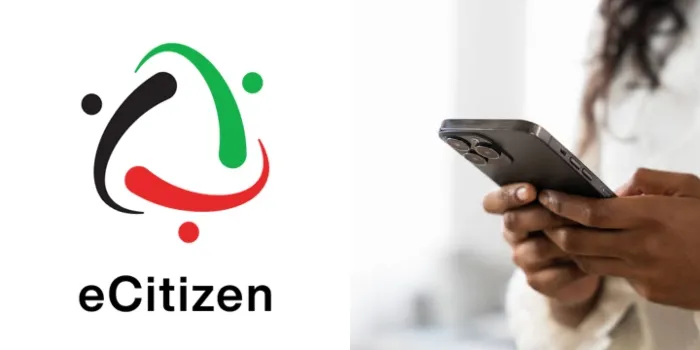
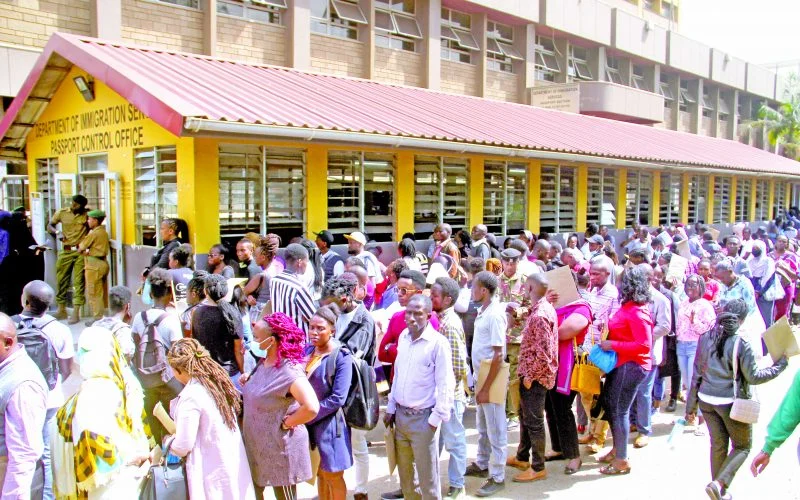
Pattern: attackers need one door, open for minutes. Kenyan organisations test once a year — if at all — then discover breaches through journalists and court filings.
A manual pentest takes weeks to schedule and days to run — while Kenya logged 11,124,632,684 threat events in FY2025/26 — ≈30 million every single day. Attackers test your doors daily; you test yours annually.
Pentera ≈ $120K/year. Burp DAST scales to $200K+/year. Manual engagements run $10K–$50K each. Counties, SMEs and most parastatals are priced out entirely.
Free/cheap scanners emit noise — no reasoning, no multi-step exploitation, no business context. Senior pentesters drown in triage instead of hunting.
"Patch deployed" ≠ "vulnerability gone". Retesting is an afterthought — so the same hole gets re-reported, or quietly stays open (see: repeat attacks on president.go.ke).
When the State House site fell, officials launched a forensic audit after the defacement. Without continuous traced evidence, you're reconstructing history instead of preventing it.
eCitizen alone fronts 15,000+ services. Kenya's talent pool can't manually cover every ministry, county, bank and fintech — the math never closes.
An AI that thinks like an attacker, works like a team of ethical hackers, and closes the loop like a disciplined security engineer — with a human always in control.
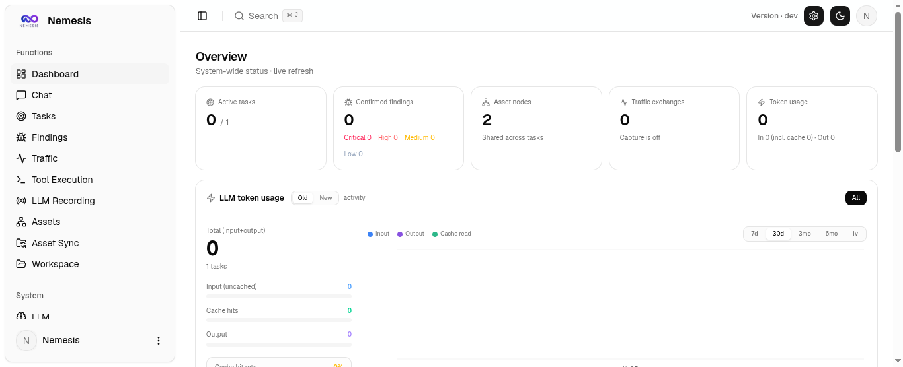
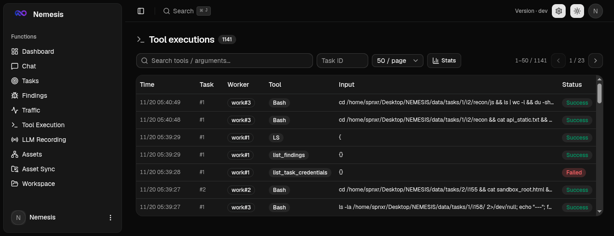
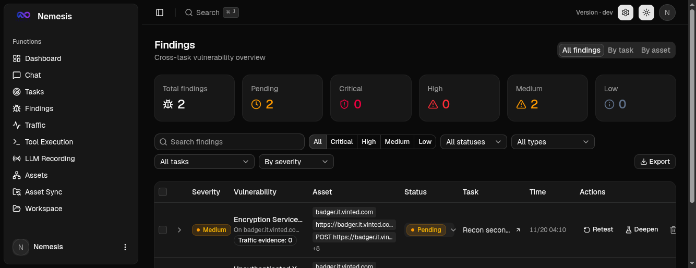
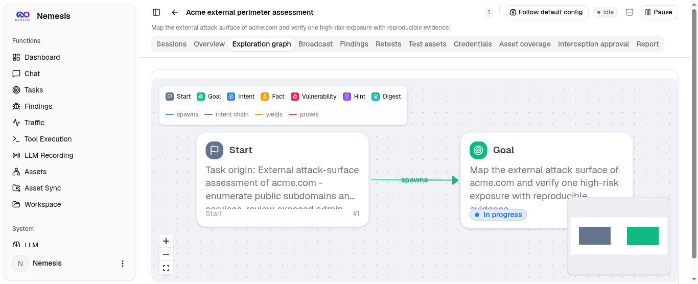
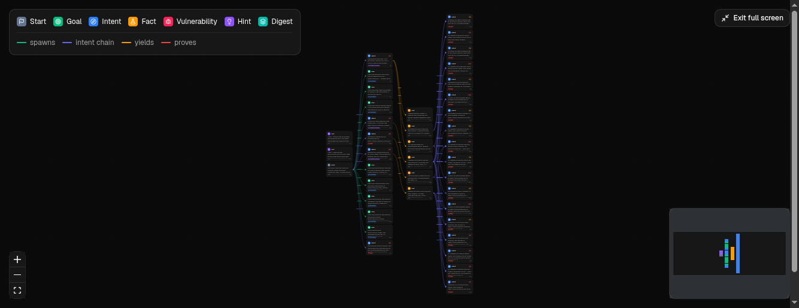
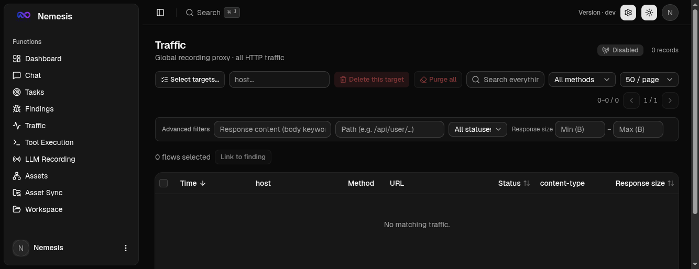
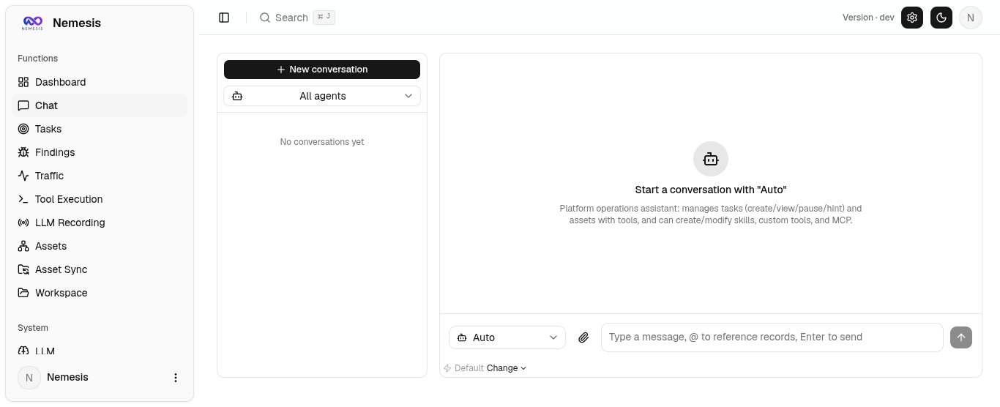
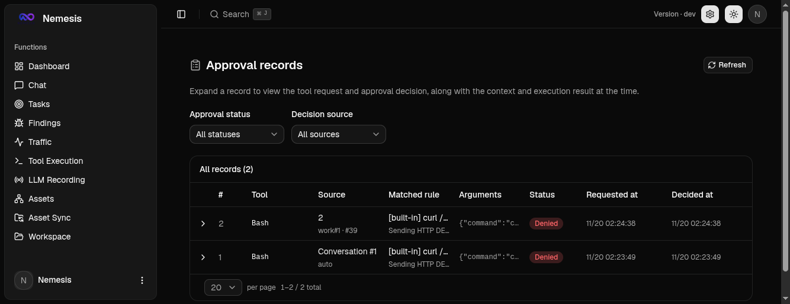
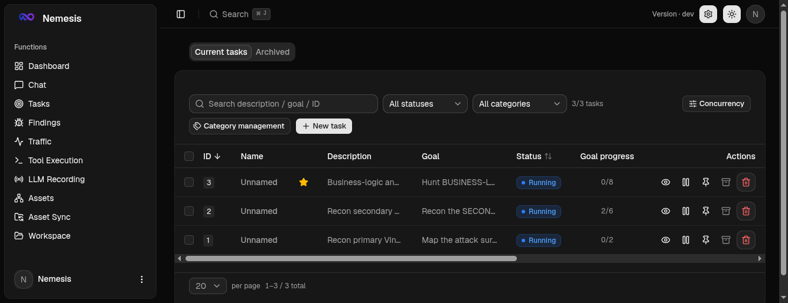
• Approval gates: intercept rules judge every tool call — allow / ask / deny. "Ask" pauses the agent until a human approves or rejects; denials are logged.
• Steer, don't restart: chat with the main agent to change direction, inject hints, add goals, or set allow/deny constraints injected as top-priority red lines.
• Budgets: turn + wall-clock limits per run with forced wrap-up — no runaway agents, no runaway bills.
Adversarial gate before reporting: reachability · preconditions · downstream controls · scope · simpler explanation. Every finding carries a reproducible PoC, measured impact ("3 of 20 payloads worked") and a proof basis. Zero findings is a valid result — no manufactured noise.
Retest runs as an independent agent session with the original evidence and context. Conclusions: Fixed / Still reproducible / Cannot confirm — each with evidence and a session link. On "Fixed", the finding status updates automatically; original evidence is preserved forever.
Approval records, backend logs, per-step activity, transcripts, traffic archive — reconstruct exactly what the agent did, when, and why. Regulator-ready evidence for CA/KICA and Data Protection Act inquiries.
| Tool / approach | Typical cost | Limitation that leaves Kenyans exposed |
|---|---|---|
| Manual pentest (consultancy) | $10K–$50K per engagement | Weeks to schedule · point-in-time snapshot · no continuous coverage · retest usually extra |
| Burp Suite Pro / DAST | $499/user/yr · up to $200K+/yr | Scanning & manual tooling — no autonomous multi-step chaining, no exploit proof, no fix loop |
| Pentera (automated validation) | ≈ $120K/year (list), quote-only | Network-focused · enterprise-priced beyond SME/county reach · no verified-fix loop |
| XBOW · NodeZero (AI pentest) | Quote-only, scoped per env | Black-box SaaS · data leaves your perimeter · no local human-steering workflow or evidence graph |
| Bug bounty platforms | Retainers + bounties: $10Ks–$100Ks/yr | Slow, inconsistent coverage · you pay per bug · no systematic retest/verification |
| Open scanners (ZAP, Nuclei…) | "Free" | No reasoning or chaining · alert fatigue · huge triage burden · no evidence of real impact |
| NEMESIS | Managed SaaS · KSh 15,000 Basic / KSh 35,000 Pro per engagement | Full loop: plan → exploit → prove → human approves → fix → verified retest — with every action traced |
The vision: no Kenyan platform should ever face a hacker who tested its doors more recently than its defenders did.
Managed SaaS — no servers to run. Your data stays private and scoped to your engagement.